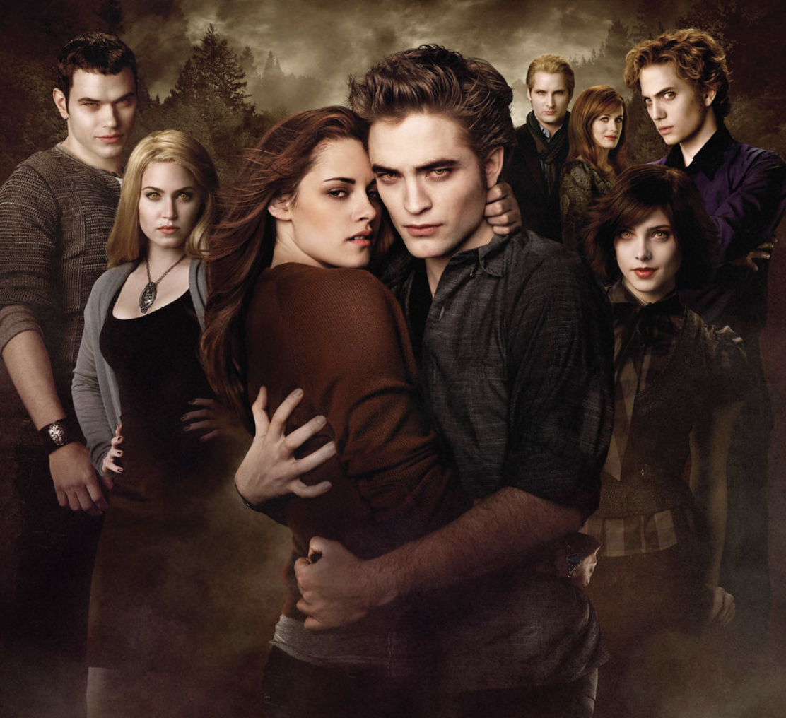

Benvenuti su Twilight Melodies, il sito web a completa disposizione degli appassionati della saga più famosa di sempre! Presso la voce Film, troverete le playlist delle colonne sonore delle cinque opere cinematografiche che compongono la storia, inclusa una breve descrizione. In alternativa, al seguente LINK, potrete trovare l'intera colonna sonora accompagnata dai rispettivi video musicali. 